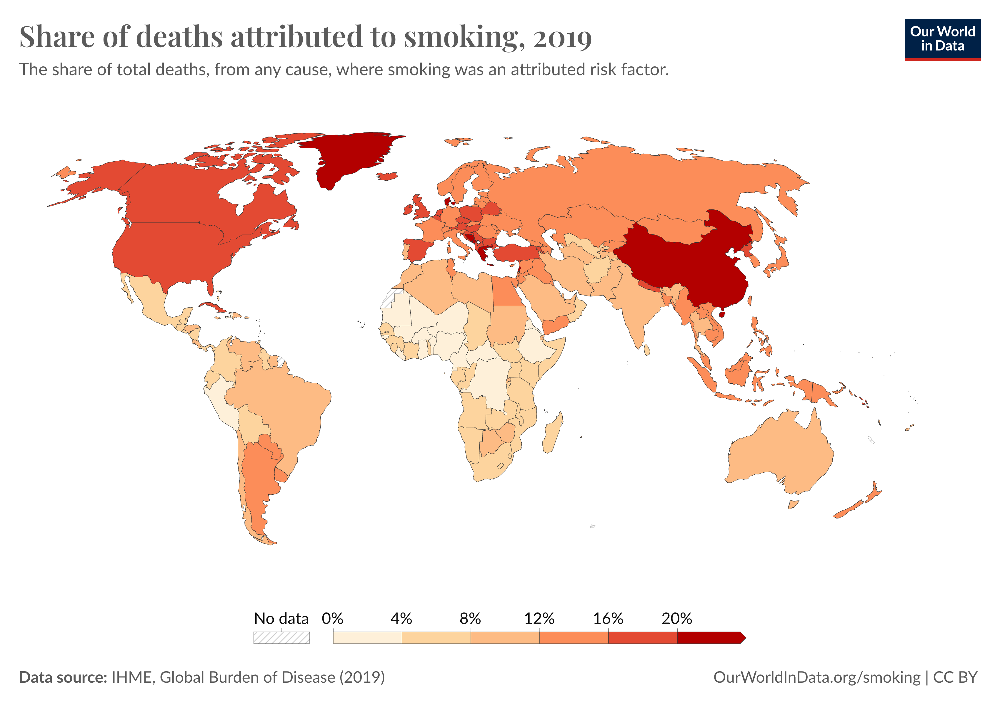
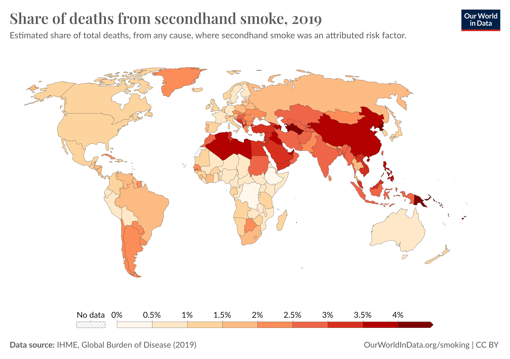

Why Is Smoking So Dangerous?
Smoking is widely regarded as one of the most hazardous habits due to its profound impact on health. It is a primary factor in a host of serious illnesses, including various cancers, heart disease, and respiratory conditions.
The link between smoking and lung cancer is particularly stark. It is the leading cause of lung cancer in both men and women, accounting for approximately 85% of all cases. The chemicals in cigarette smoke damage the cells lining the lungs, and over time, this damage can lead cells to behave abnormally, often leading to cancer. Moreover, smoking significantly increases the risk of other cancers, including those of the throat, mouth, esophagus, pancreas, bladder, and cervix.
Cardiovascular health is also severely impacted by smoking. The chemicals in tobacco smoke thicken and narrow the walls of blood vessels, which reduces blood flow and increases the risk of blood clots. This can result in strokes and heart attacks. Nicotine, a key component of cigarettes, elevates blood pressure and heart rate, which further strains the cardiovascular system.
In addition to cancer, smoking is the predominant cause of chronic obstructive pulmonary disease (COPD), which includes emphysema and chronic bronchitis. These conditions are characterized by obstructed airflow and make breathing difficult, causing severe long-term discomfort.
Beyond its effects on the lungs and heart, smoking adversely affects reproductive health, immune function, and bone health, leading to fertility issues, a higher susceptibility to infections, and an increased risk of osteoporosis. Additionally, secondhand smoke from cigarettes poses significant health risks to those around smokers, including children and non-smoking adults, and can lead to respiratory infections, asthma, and other health complications.
The severe harm caused by smoking underscores its extreme danger. It leads to millions of deaths worldwide every year, making it a significant public health issue.
Statistics on Smoking
8 million people die prematurely yearly from tobacco use.
About 1.3 million are non-smokers who are dying because they are exposed to second-hand smoke.
Personal Stories
Annette S.’s Story

Annette began smoking occasionally as a teenager and became a regular smoker by age 20. At 50, influenced by her granddaughter, she quit smoking after over three decades but was already battling cancer. Diagnosed with advanced lung cancer at 52, she underwent a lung removal surgery. Later, she also faced oral cancer requiring further surgery. Now 57, Annette is cancer-free and active in supporting smoking cessation efforts. She enjoys spending time with her family, crocheting, and cooking, and participates in the Tips From Former Smokers campaign to warn others about the dangers of smoking.
Brandon C.’s Story

Brandon began smoking in his mid-teens and was diagnosed with Buerger’s disease at 18, a condition caused by tobacco use that blocks blood vessels and can lead to severe complications. Despite the diagnosis, Brandon continued smoking until severe consequences—including the amputation of both his legs and several fingertips—forced him to quit at 27. Now smoke-free for four years, Brandon manages life as a double amputee, dealing with daily challenges and limitations. He regrets the impact his smoking had on his family and is motivated to help others quit. Brandon shares his story through the Tips From Former Smokers® campaign, emphasizing the urgent need to stop smoking before facing irreversible damage.
Quitting Resources
- List your reasons to quit
- Tell people you're quitting
- If you have tried to quit before, remember what worked
- Use stop smoking aids
- Have a plan if you are tempted to smoke
- List your smoking triggers and how to avoid them
- Keep cravings at bay by keeping busy
- Exercise away the urge
Benefits of Quitting
- Healthier body
- Food tastes better
- Your sense of smell returns to normal
- Your breath, hair, and clothes smell better.
- Your teeth and fingernails stop yellowing
- Ordinary activities (for example, climbing stairs or light housework) leave you less out of breat
- You can be in smoke-free buildings without having to go outside to smoke
- Helps stop the damaging effects of tobacco on how you look, including premature wrinkling of your skin, gum disease, and tooth loss
References
1. Share of deaths from secondhand smoke. (n.d.). Our World in Data. https://ourworldindata.org/grapher/share-deaths-secondhand-smoke
2. Real stories. (2024, April 15). Centers for Disease Control and Prevention. https://www.cdc.gov/tobacco/campaign/tips/stories/index.html
3. Health benefits of quitting smoking over time. (n.d.). American Cancer Society. https://www.cancer.org/cancer/risk-prevention/tobacco/benefits-of-quitting-smoking-over-time.html
4. Quit smoking - Better Health. (n.d.). nhs.uk. https://www.nhs.uk/better-health/quit-smoking/